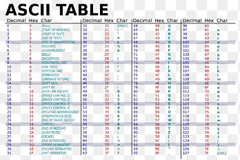

Het binaire stelsel is een manier om getallen weer te geven met alleen de cijfers 0 en 1.
In dit systeem wordt elk cijfer een bit genoemd. Een rij van acht bits vormt samen een byte. Dit stelsel is essentieel voor computers, omdat ze informatie verwerken en opslaan in de vorm van nullen en enen
Waarom is het belangrijk?
Het is de taal die alle computers begrijpen.
Alle programma’s, foto’s en video’s worden uiteindelijk in nullen en enen opgeslagen.
Het maakt digitale communicatie mogelijk.
Wat is een byte?
Een byte is een eenheid waarmee een computer informatie opslaat. Een byte bestaat uit 8 bits, en elk bit kan 0 of 1 zijn. Samen kunnen de 8 bits 256 verschillende combinaties maken.
Elke letter, elk cijfer of teken wordt opgeslagen als één byte. Bijvoorbeeld de naam “Bas” bestaat uit 3 bytes of 24 bits. Ook spaties en leestekens hebben hun eigen byte.
Bytes zijn ook de basis voor grotere eenheden:
1 kilobyte (kB) = 1000 bytes
1 megabyte (MB) = 1 miljoen bytes
1 gigabyte (GB) = 1 miljard bytes
Kortom: een byte is de maat waarmee je ziet hoe groot een bestand of stukje informatie op een computer is.
Twee toepassingen van het binaire stelsel
1. Getallen weergeven
Een computer telt niet met gewone cijfers (0-9), maar met nullen en enen (0 en 1)
Bijvoorbeeld: Het getal 5 schrijf je in de binaire code als 101.
2. Tekst opslaan
Ook letters worden in nullen en enen omgezet met codes.
Bijvoorbeeld: de letter A wordt in binaire code 01000001.

De ASCII-Tabel
De ASCII-tabel (American Standard Code for Information Interchange) is een systeem dat elk teken, zoals letters, cijfers en symbolen, een eigen nummer geeft. De tabel heeft 128 tekens in de normale versie en 256 tekens in de uitgebreide versie.
Computers gebruiken dit om tekst op te slaan en weer te geven. Bijvoorbeeld de letter C heeft het nummer 67. De tekens worden opgeslagen met binaire codes, dat zijn combinaties van 0 en 1.
Kortom, de ASCII-tabel zorgt ervoor dat computers over de hele wereld dezelfde tekst begrijpen.
Voorbeelden:
Het getal 10 = 1010 binair.
Het woord Hi wordt in ASCII binair: 01001000 01101001.
Durf jij de uitdaging aan? Speel Binary-bonanza en ontdek hoe goed jij bent in het binaire stelsel!